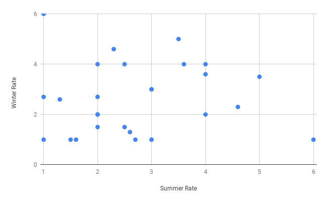

Data projects
Please select one of the projects on the left to begin.
The assignment data was extracted from the Wikipedia entry on All Time Olympic Games Medals , with some minor modification to make things interesting. The dataset is split into two CSV files one of summer games and the other for the winter games and combined total. Here you can find the datasets: Summer Games and Winter Games . Use the datasets to answer the following questions:
(based on the both datasets) Merge the two datasets Olympics_dataset1.csv and Olympics_dataset2.csv (do not concatenate the datasets and ignore the first row of each of the datasets). And rename columns of the result dataframe as follow (remove the rest of columns from the result dataset): Country, summer_rubbish, summer_participation, summer_gold, summer_silver, summer_bronze, summer_total, winter_ participation , winter_gold, winter_silver, winter_bronze, winter_total Remove the "Totals" row from the dataframe. Display the first five rows of the dataframe.
(based on the dataframe created in Question-1). Rename country to only keep the name of the country without the abbreviations (Afghanistan (AFG) --> Afghanistan) . Set the index as the country name, remove below columns and then display the first 5 rows in the Dataframe : summer_rubbish, summer_total , winter _total
(based on the dataframe created in Question-2). Remove the rows with NaN fields and display the last 10 rows .
(based on the dataframe created in Question-3). Calculate and display which country has won the most gold medals in summer games? (Just print the country name)
(based on the dataframe created in Question-3) Calculate and display which country name had the biggest difference between their summer and winter gold medal? (Just print the country name and the difference)
(based on the dataframe created in Question-3). Sort the countries in descending order, according to the number of total of medals (summer and winter) and display the first and last 5 rows of the dataframe (including a column showing the total number of medals) .
(based on the dataframe created in Question-3). Plot a bar chart of the top 10 countries ordered by the number of total of medals (summer and winter). For each country use a stacked bar chart showing for each county the total medals for winter and summer games. See example chart below:

(based on the dataframe created in Question-3) Plot a bar chart of the countries (United States, Australia, Great Britain, Japan, New Zealand). For each county you need to show the gold, silver and bronze medals for winter games. See example below of the chart:

(based on the dataframe created in Question-3) Assume that there countries are ranked based on a new ranking scheme for the summer games. In the new ranking scheme, a Gold, Silver, and Bronze medals have 5, 3, and 1 points respectively. And countries are ranked based on the points eared per participation (total points divided by total number of participations in games). Based on this scheme, rank the countries and print the name of top 5 countries having the best rate (points per participation ). Print both country names and rates. Example: Imagine that a country has 1 gold medal, and 1 silver (5 + 3 points = totally 8 points); and this country had 10 participation in the summer games. The rate of points per participation will be 8 / 10 = 0.8 for this country. (if per participation is 0, the rate should be 0; )
(based on the dataframe created in Question-3) Based on the raking scheme in Question 9, also calculate the points per participation for each country in the Winter Games. Next plot a scatter chart with x = "points per participation for summer games" , and y = "points per participation for winter games". Here is an example of such a chart:

however, you also need to ink bubbles based on the their continents (e.g, Asia red, Africa blue, ..). You may use the Country-Continent dataset to colour the counties, and use a default color (Gray) for countries which are not listed in the dataset. You chart must also have legends and labels showing the name of countries beside the points inside the chart.
Speed dating dataset
sdafdfkhsakl dfhvskadfhasksjfhsakfhks hakshfks